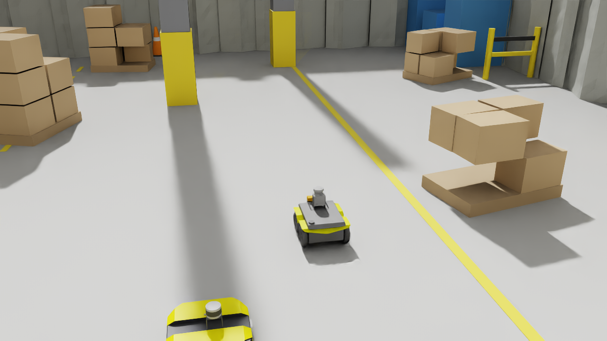
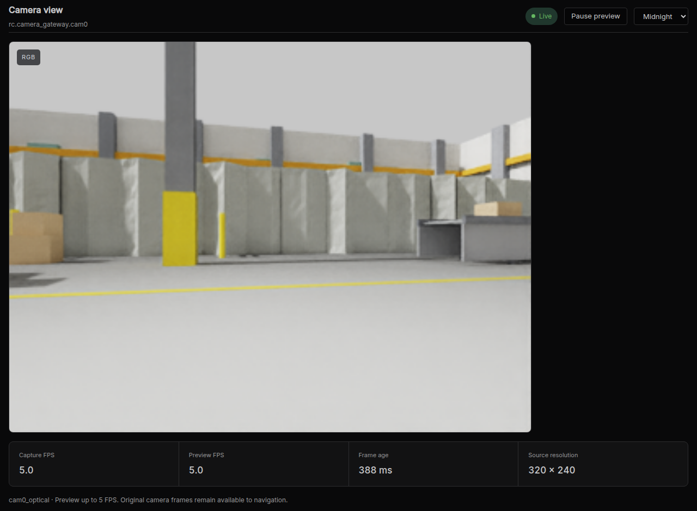
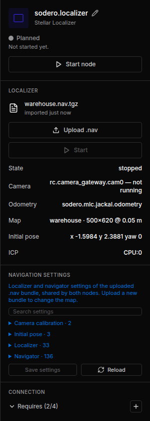
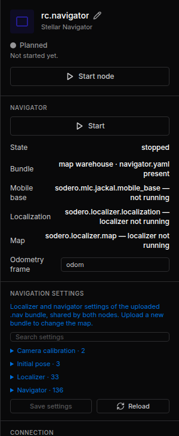
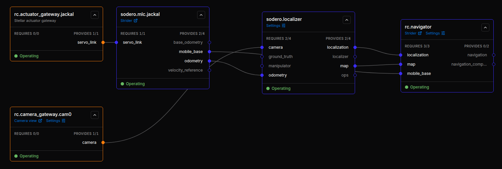
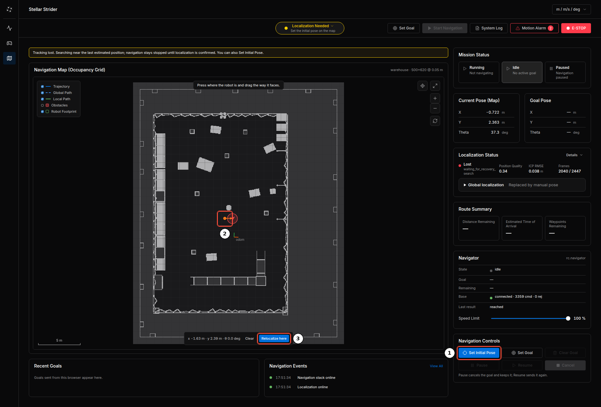
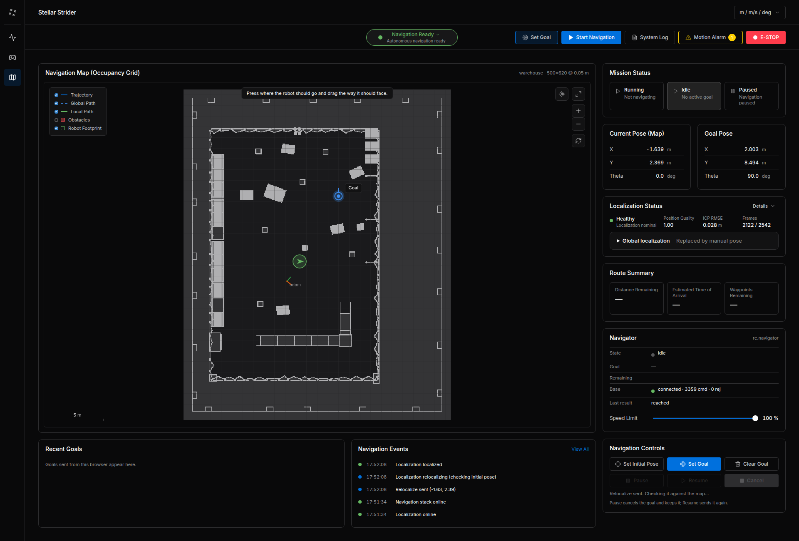
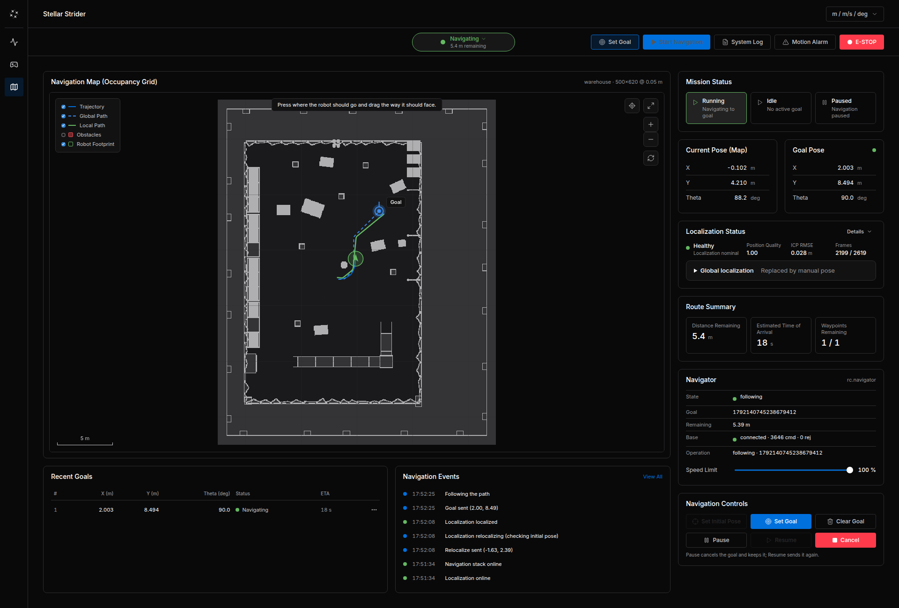
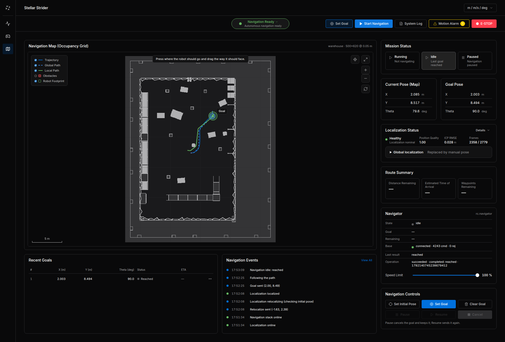
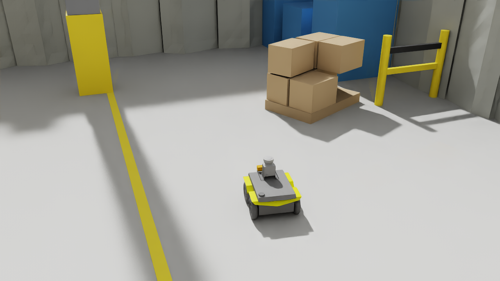

Navigate in Simulation¶
This tutorial continues the Quick Start. You add a camera, the Localizer and the Navigator to the simulated Jackal, load the map of its warehouse, let the robot find itself on the map, and send it to a goal.


Before You Start¶
| You need | Details |
|---|---|
| The Quick Start setup | sodero.actuator_gateway.jackal and sodero.mlc.jackal, running, with the Jackal driving in Isaac Sim |
| The example scene | jackal_warehouse.usd from the Quick Start (jackal_warehouse.zip). The Jackal carries a depth camera cam0 on its base_link, 0.22 m ahead of the base and 0.47 m above the floor, looking forward with a 90° horizontal field of view. |
| The map bundle | warehouse.nav.tgz: the map of the warehouse scene with the settings used in this tutorial |
Step 1: Prepare Isaac Sim¶
The localizer in this tutorial uses the camera at 320 × 240 pixels and 5 frames per second. Isaac Bridge renders cameras at 640 × 480 and 15 frames per second unless told otherwise, so start Isaac Sim from its installation folder with this camera setting (close it first if it runs):
Then open jackal_warehouse.usd and press Play. The Isaac Bridge window lists cam0 320x240 at 5 fps.
Check two more things before you go on:
- Clocks. The clocks of Stellar X and the Isaac Sim computer must agree within 20 ms. Synchronize both with a time server (NTP). If you cannot, see Camera Timing.
- Quick Start nodes. If you restarted Isaac Sim for this step, restart the Quick Start nodes once the scene plays: Stop all nodes, then Start all nodes (Connect to Stellar Station › Stop, Pause and Play). Both nodes show Operating again.
Step 2: Add the Camera Gateway¶
- Add node › Gateway › Camera gateway, name it
cam0(Sensors and Cameras). - In its inspector, set Camera name
cam0(the camera prim's name in the scene) and Camera host (the Isaac Sim computer). The port is53335. - With the camera node stopped, open CAMERA SETTINGS and enter the values in the table below. Expand Intrinsics to find horizontal fov deg; a new gateway shows this field directly, without a mode selector.
- Click Save settings, then Start node. Open Camera view on its card and check that frames arrive at
320 × 240, about5 fps. If the image stays empty, see Camera Timing.
Change the camera defaults before localization
A new camera gateway starts with horizontal fov deg = 60 and fps = 15. The Jackal camera in jackal_warehouse.usd has a 90° horizontal field of view, and this tutorial uses 5 fps. Change both values before starting the Localizer. A visible image confirms reception; it does not confirm correct camera calibration. A wrong field of view distorts the 3D points reconstructed from depth, so the Localizer can remain Initializing, Relocalizing or Lost even while the image looks normal.
| Setting in CAMERA SETTINGS | New gateway default | Value for this tutorial |
|---|---|---|
| Intrinsics › horizontal fov deg | 60 |
90 — change this |
| General › fps | 15 |
5 — change this |
| General › frame id | cam0_optical |
cam0_optical |
| General › width, height | 0, 0 |
Keep 0, 0: detect 320 × 240 from incoming frames |
| Simulation camera › capture latency ns | 0 |
Keep 0 for this example |
| Simulation camera › recv timeout ms | 1000 |
Keep 1000 |
The gateway's fps setting does not change Isaac Sim's rendering rate. Set the source to 320 × 240 at 5 fps in Step 1. For a different scene or camera, enter its actual field of view; 90 is the value for this example. Isaac Bridge prints the field of view when the scene starts.


Correct Settings on a Running Setup¶
If you already started navigation with the defaults:
- Cancel any active navigation goal and wait for the robot to stop.
- Stop Navigator → Localizer → Camera gateway. The camera settings become editable after the camera node stops.
- Set horizontal fov deg to
90and fps to5, then click Save settings. - Start Camera gateway → Localizer → Navigator. Check the camera image and wait for Localization Status: Healthy. If it still needs an initial pose, set the robot's actual position and direction as described in Step 6.
Step 3: Add the Localizer and Load the Map¶
- Add node › Controller › Localizer. It is named
sodero.localizer. - In its inspector, click Upload .nav and choose
warehouse.nav.tgz. The inspector shows the map:warehouse · 500×620 @ 0.05 m, and the initial pose of the bundle.


Step 4: Add the Navigator¶
Add node › Controller › Navigator. It is named sodero.navigator and uses the navigator settings of the same map bundle.


Step 5: Connect the Ports¶
Drag these five connections (from the required port on the left of a card to the provided port on the right of another):
| From | To |
|---|---|
sodero.localizer › camera |
sodero.camera_gateway.cam0 › camera |
sodero.localizer › odometry |
sodero.mlc.jackal › odometry |
sodero.navigator › localization |
sodero.localizer › localization |
sodero.navigator › map |
sodero.localizer › map |
sodero.navigator › mobile_base |
sodero.mlc.jackal › mobile_base |


While nodes run, the graph can show additional ports with a red dashed outline. Running nodes report them; they are not part of your saved graph and need no connection.
When the Station has several Strider nodes, make sure the localizer's odometry and the navigator's mobile_base connect to the same robot.
Step 6: Start and Localize¶
- In Isaac Sim, stop and play the scene so the Jackal is back at its starting pose.
- Start the nodes in order:
sodero.localizer, thensodero.navigator(the gateway, the Strider and the camera already run). - In the gateway's log, after Simulator connected again, open Strider and switch Twist and Servo On again (a simulation restart turns the servo off).
- Open Strider's Navigation page (the Strider link on the Navigator's card). Localization Status shows Healthy once the camera view matches the map.
If the status stays Initializing, Relocalizing or Lost while the camera image is visible, first check the saved horizontal fov deg = 90 and fps = 5 settings from Step 2. If they are correct and the robot still cannot localize or appears at the wrong place, set the initial pose: click Set Initial Pose ①, press on the map where the robot is and drag in the direction it faces ②, then click Set initial pose (Relocalize here ③ when a pose was set before).


Step 7: Send a Goal¶
-
Click Set Goal, press on the map at the goal and drag in the direction the robot should face. Goal Pose shows the coordinates.

The goal is set; the robot is localized (Healthy) -
Click Start Navigation. The planned path appears and the robot drives; Navigator shows following and Route Summary the remaining distance.



When the robot arrives, Recent Goals shows Reached and Navigation Events Navigation idle: reached.




Step 8: Finish¶
Click Cancel if a goal is still running, switch the servo off and choose Idle in Strider, then stop the nodes (navigator, localizer, camera, Strider, gateway) and the Isaac Sim scene.
Troubleshooting¶
Camera Timing¶
Every camera frame carries its capture time on the Isaac Sim computer's clock, and the camera gateway accepts only frames captured at most 20 ms ahead of and 2 s behind Stellar X's clock. It drops the others: the Camera view in Step 2 stays empty, and the camera gateway's log shows Frames … are stale or carry capture times that do not match this Station's clock (clock skew?). Two computers that each follow a time server on the internet are easily more than 20 ms apart.
If you cannot synchronize the clocks, start Isaac Sim with RC_CAMERA_CAPTURE_TIME=0 as well. The frames then carry no capture time, and the camera gateway stamps each frame when it arrives. An arrival time is later than the capture time by the rendering and network delay, so synchronized clocks remain the better choice for localization.
Nodes After an Isaac Sim Restart¶
Restarting Isaac Sim interrupts the nodes: the gateway loses the simulator, and the Strider's watchdog stops the robot. Once the scene plays again, restart them from the toolbar: Stop all nodes, then Start all nodes (Connect to Stellar Station › Stop, Pause and Play). The Localizer may still hold its last pose; set the initial pose again if the robot appears at the wrong place.
Tips for Your Own Robot¶
- Run the simulation in real time. The controllers follow the simulation's time, but the camera localization runs on wall time. A slow simulation makes localization lag behind.
- Skid-steer bases turn less than their wheels say, because the wheels slide sideways. Let the robot turn in place before it drives (
rotate_to_heading_min_angleabout 0.25 rad), and calibrate the wheel offsets of the.sddmso odometry matches the real turn. - Repeating structures (identical racks, long corridors) can mislead the localizer. Limit the correction per update (
icp.max_jump_m,icp.max_jump_rad) and keep distinct objects in the camera's view. - The camera height in the map bundle's extrinsics is measured from the floor (Localization and Navigation).